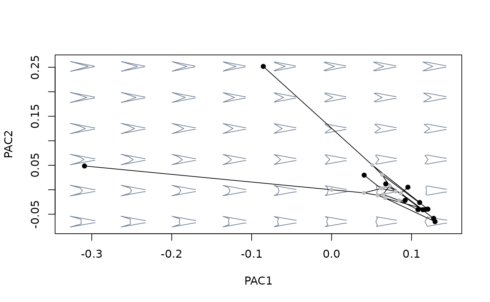
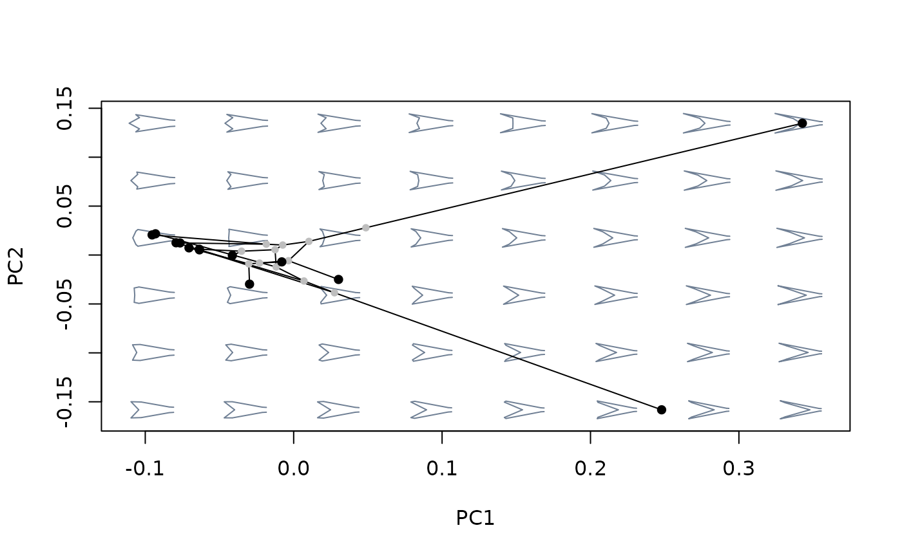

Performs Phylogenetically Aligned Component Analysis (PACA). Experimental.
phyalign_comp(x, tree, corr = FALSE)A matrix with one or more variables as columns and observations as
rows. Rows must be named and match tip labels from the phylogenetic
tree.
A "phylo" object containing a phylogenetic tree. Tip
labels should match the row names from x.
Logical; whether to use correlation instead of covariance matrix as input.
A "phyalign_comp" object formatted following the
"prcomp" class:
$x: a matrix with the scores of observations in the new
ordination axes.
$values: squared, sample size-corrected singular values from
the SVD of the cross product of the phylogenetic covariance matrix and
trait data.
$rotation: a matrix of eigenvector coefficients.
$center: the phylogenetic mean (i.e., the shape estimated
for the root of the tree).
Phylogenetically aligned component analysis (PACA) finds a new set of axes as linear combinations of the original trait variables that are maximally aligned with the phylogenetic signal (i.e., covariation between trait variation and phylogenetic structure) present in the data.
PACA shares some important properties with phylogenetic PCA that are worth having in mind. Most importantly, the transformation achieved by PACA to maximize alignment to phylogenetic signal only concerns the orientation of the new axes (PACs), and not their overall dispersion (i.e., Euclidean distances among observations are preserved when measured across the entire set of PACs). Like phylogenetic PCA, scores projected into the different PACs can be correlated (even though singular vectors are orthogonal), and their dispersion does not necessarily decrease for lower axes (even though singular values do progressively decay). Also, A phylogenetic covariance matrix is computed assuming a Brownian model of trait evolution, and the ordination is centered around the phylogenetic mean (i.e., the root of the phylogenetic tree).
This analysis produces the same number of axes than the number of original variables. Again similar to phylogenetic PCA, interpretation of ordination axes' singular values is complex: they represent the amount of covariation between phylogenetic structure and trait variation accounted by each axis, with a scale that is related to branch lengths' units, and thus cannot be directly interpreted as proportion of the original variance.
Collyer, M. L., & Adams, D. (2021). Phylogenetically aligned component analysis. Methods in Ecology and Evolution, 12(2), 359-372.
#load packaes and data: shapes, species, links and tree
library(geomorph)
data("tails")
shapes <- tails$shapes
species <- tails$data$species
links <- tails$links
tree <- tails$tree
#extract species shapes
sp_shapes <- expected_shapes(shapes, species)
#perform phylogenetically aligned component analysis
paca <- phyalign_comp(x = two.d.array(sp_shapes), tree = tree)
#inspect results
names(paca) #the contents of the resulting object
#> [1] "values" "rotation" "x" "center"
#exp_var(paca) #interpretation of eigenvalues is complex! not yet implemented
plot(paca$x) #ordination
#compare shape variation as summarized by different methods
#build morphospace using phylogenetically aligned components analysis
mspace(sp_shapes, links = links, nh = 8, nv = 6, FUN = phyalign_comp,
tree = tree) %>%
proj_phylogeny(sp_shapes, tree = tree)

#compare against morphospace built with ordinary PCA
mspace(sp_shapes, links = links, nh = 8, nv = 6) %>%
proj_phylogeny(sp_shapes, tree = tree)
